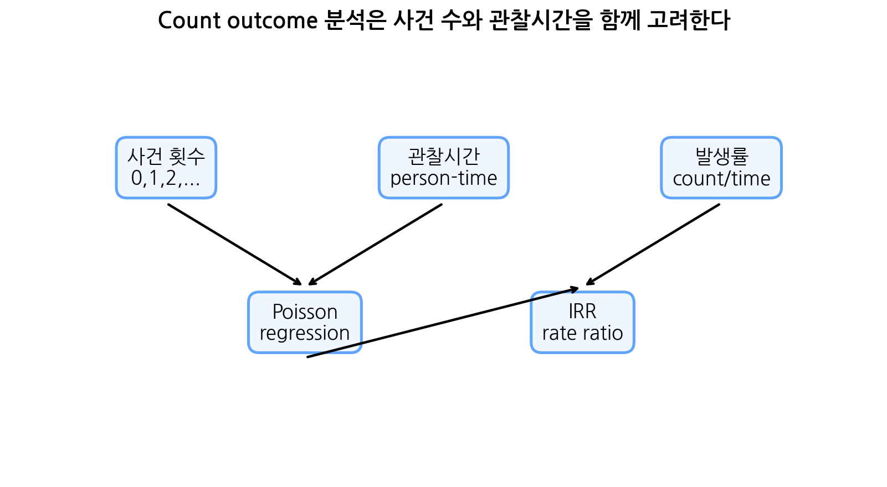
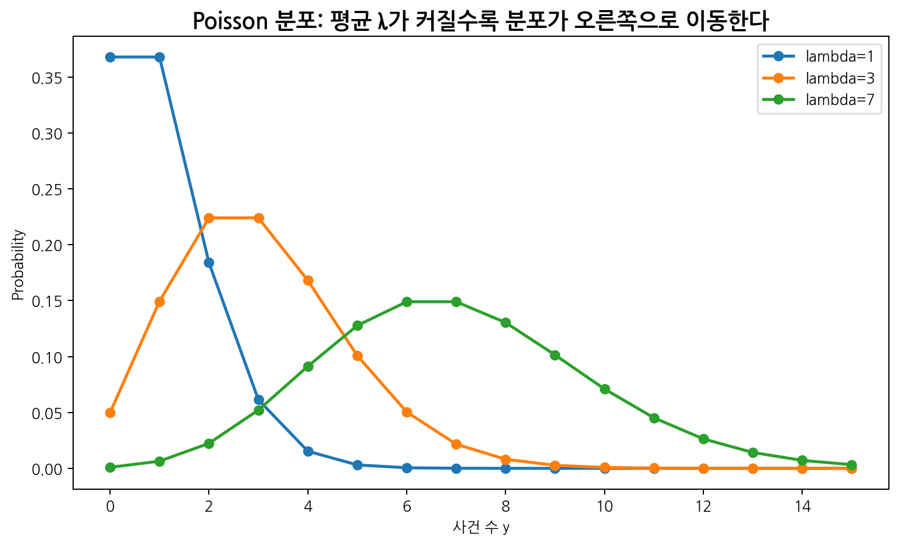
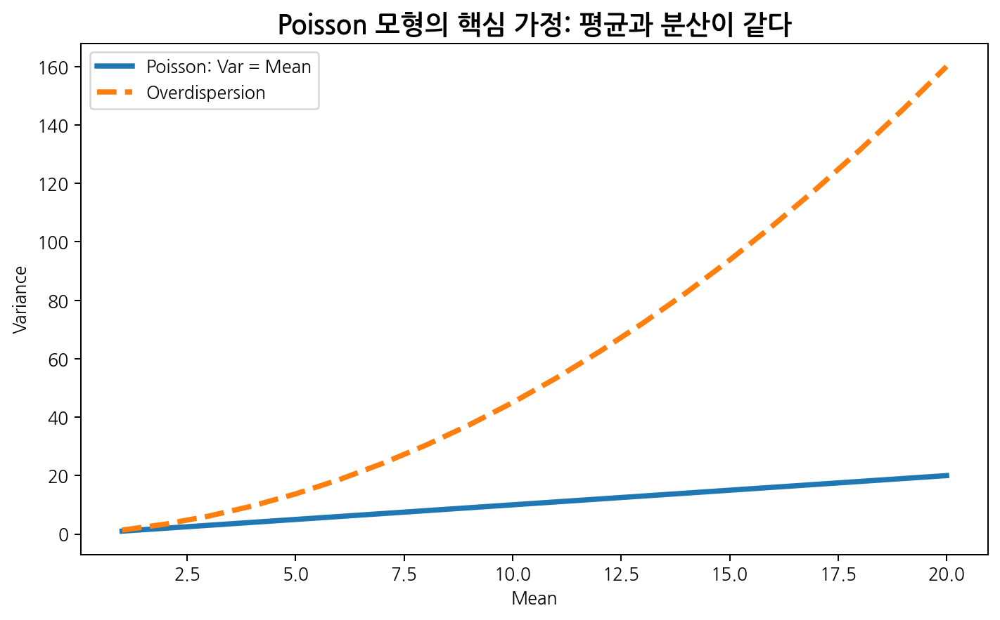
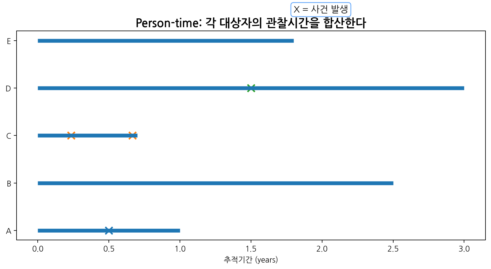
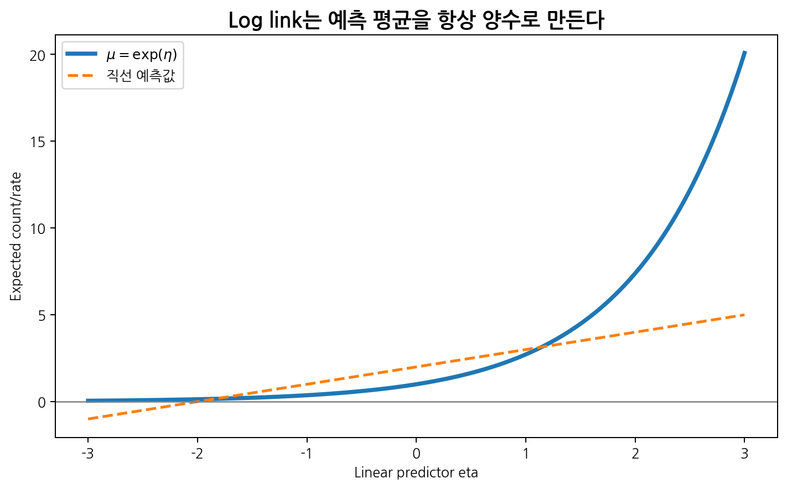
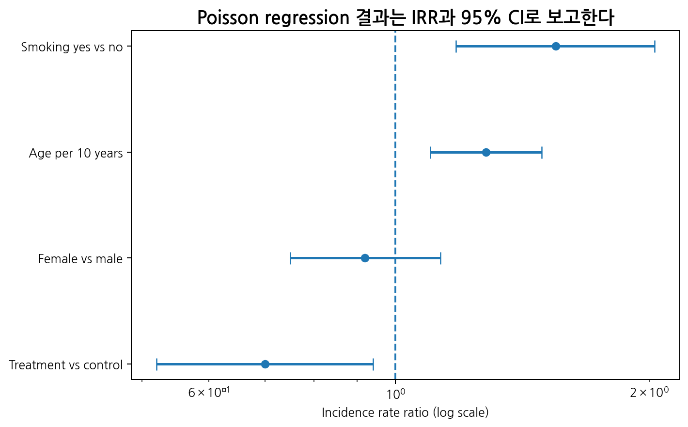
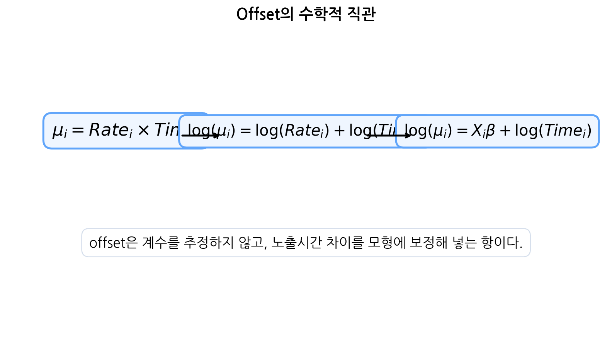
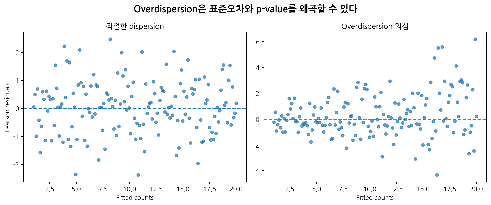
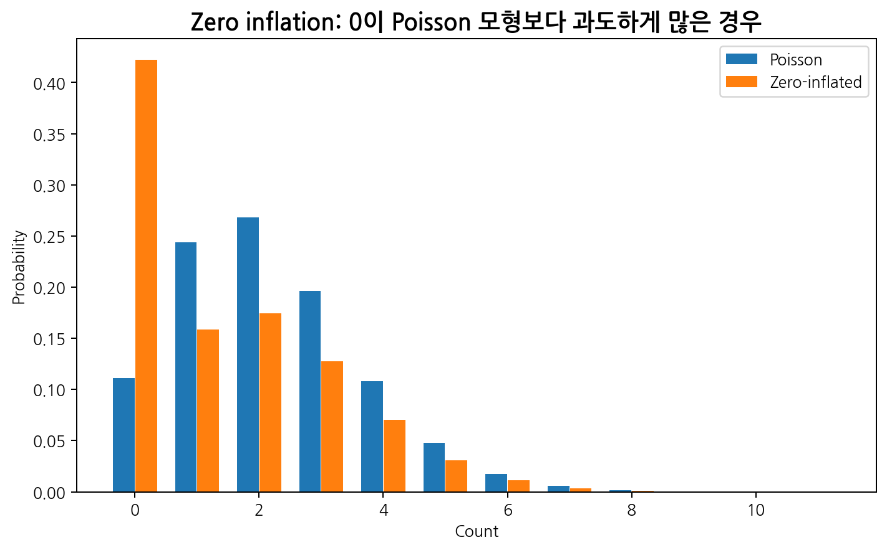
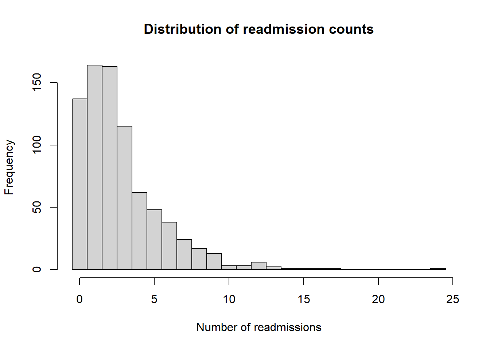

glm(
count ~ x1 + x2 + offset(log(time)),
family = poisson,
data = dat
)5 포아송 회귀분석
이번 장에서는 Poisson regression을 학습한다. 지난 장에서는 이진 결과변수에 대해 로지스틱 회귀를 다루었다. 이번 장에서는 결과변수가 “사건이 몇 번 발생했는가”를 나타내는 count outcome일 때의 분석을 다룬다.
의학·보건 연구에서 count outcome은 매우 흔하다.
- 1년 동안 입원 횟수
- 추적기간 중 감염 발생 횟수
- 환자당 응급실 방문 횟수
- 병원별 수술 후 합병증 발생 건수
- 지역별 암 발생 건수
- 사람-시간(person-time)당 사건 발생률
- 의료기관별 항생제 처방 건수
- 추적기간 중 재발 횟수
이러한 자료는 연속형 결과변수처럼 정규분포를 가정하기 어렵고, 이진 결과변수처럼 사건 발생 여부만 보는 것도 충분하지 않다. 사건이 한 번 발생했는지뿐 아니라 몇 번 발생했는지, 그리고 얼마나 긴 시간 동안 관찰했는지가 중요하기 때문이다.

Poisson regression은 count outcome 또는 발생률(rate)을 설명변수와 연결하는 대표적인 일반화선형모형(GLM)이다. 핵심 구조는 다음과 같다.
\[Y_i \sim Poisson(\mu_i)\]
\[\log(\mu_i) = \beta_0+\beta_1X_{1i}+\cdots+\beta_pX_{pi}\]
관찰시간이 다르면 offset을 포함한다.
\[\log(\mu_i) = \log(Time_i) + \beta_0+\beta_1X_{1i}+\cdots+\beta_pX_{pi}\]
이번 장에서는 Poisson 분포, 발생률, person-time, offset, incidence rate ratio(IRR), overdispersion, negative binomial regression, zero inflation까지 연결하여 학습한다.
Note핵심 메시지
Poisson regression의 핵심은 사건 수를 분석하되, 필요할 때 person-time을 offset으로 포함하여 발생률 차이를 모델링한다는 점이다.
5.1 Count outcome의 이해
5.1.1 Count outcome이란?
Count outcome은 사건이 몇 번 발생했는지를 나타내는 결과변수이다. 가능한 값은 0, 1, 2, 3과 같은 0 이상의 정수이다.
| 연구 상황 | Count outcome |
|---|---|
| 감염병 연구 | 추적기간 중 감염 발생 횟수 |
| 보건의료 이용 연구 | 응급실 방문 횟수 |
| 암 역학 | 지역별 암 발생 건수 |
| 임상연구 | 재입원 횟수 |
| 안전성 연구 | 이상반응 발생 건수 |
| 치과 연구 | 충치 개수 |
| 정신건강 연구 | 자해 시도 횟수 |
Count outcome은 다음 특징을 가진다.
- 음수가 될 수 없다.
- 정수값만 가진다.
- 0이 많을 수 있다.
- 오른쪽으로 치우친 분포가 흔하다.
- 평균과 분산의 관계가 중요하다.
- 관찰시간 또는 노출량 차이를 고려해야 할 수 있다.
Warning일반 선형회귀의 한계
Count outcome을 일반 선형회귀로 분석하면 예측값이 음수가 될 수 있고, 정규성·등분산성 가정이 잘 맞지 않을 수 있다.
5.1.2 Count, rate, risk의 차이
Count, rate, risk는 모두 사건을 다루지만 서로 다르다.
| 개념 | 정의 | 예 |
|---|---|---|
| Count | 사건 발생 횟수 | 1년 동안 감염 20건 |
| Risk | 일정 기간 동안 적어도 한 번 사건이 발생할 확률 | 1년 감염위험 10% |
| Rate | person-time당 사건 발생 속도 | 100 person-years당 5건 |
예를 들어 한 환자가 1년 동안 두 번 입원했고 다른 환자가 5년 동안 두 번 입원했다면 count는 같지만 rate는 다르다.
- 환자 A: 2건 / 1년 = 2건 per person-year
- 환자 B: 2건 / 5년 = 0.4건 per person-year
따라서 추적기간이 다르면 단순한 count 비교보다 rate 비교가 더 적절하다.
5.2 Poisson distribution
5.2.1 확률질량함수
확률변수 \(Y\)가 평균 \(\lambda\)인 Poisson 분포를 따른다면 다음과 같이 쓴다.
\[Y \sim Poisson(\lambda)\]
Poisson 분포의 확률질량함수는 다음과 같다.
\[P(Y=y) = \frac{e^{-\lambda}\lambda^y}{y!}, \quad y=0,1,2,\ldots\]
여기서 \(\lambda\)는 일정한 시간 또는 공간에서 기대되는 사건 발생 횟수이다.

5.2.2 평균과 분산
Poisson 분포의 가장 중요한 특징은 평균과 분산이 같다는 것이다.
\[E(Y)=\lambda\]
\[Var(Y)=\lambda\]
따라서
\[E(Y)=Var(Y)\]
이다. 이를 equidispersion이라고 한다.

실제 의학 자료에서는 분산이 평균보다 큰 경우가 흔하다. 이를 overdispersion이라고 한다. Overdispersion이 있으면 일반 Poisson 회귀의 표준오차가 과소추정되어 p-value가 지나치게 작아질 수 있다.
5.2.3 Poisson 분포가 적절한 상황
Poisson 분포는 다음 조건이 대체로 맞을 때 자연스럽다.
- 사건이 일정한 시간 또는 공간에서 발생한다.
- 사건 수는 0 이상의 정수이다.
- 같은 짧은 구간에서 두 사건이 동시에 발생할 가능성은 매우 작다.
- 서로 다른 구간의 사건 발생이 독립적이다.
- 사건 발생률이 관찰 단위 안에서 대체로 일정하다.
하지만 실제 자료에서는 환자별 기저 위험이 다르거나, 사건들이 서로 독립이 아니거나, 사건 발생률이 시간에 따라 변하는 경우가 많다. 이런 경우 Poisson 모형이 과도하게 단순할 수 있다.
5.3 발생률과 person-time
5.3.1 발생률
발생률(rate)은 사건 수를 person-time으로 나눈 값이다.
\[Rate = \frac{\text{Number of events}}{\text{Person-time}}\]
예를 들어 감염 20건이 1,000 person-days 동안 발생했다면,
\[Rate = \frac{20}{1000} = 0.02 \text{ per person-day}\]
이는 100 person-days당 2건으로 표현할 수도 있다.
\[0.02 \times 100 = 2\]
5.3.2 Person-time
Person-time은 각 개인이 관찰된 시간을 합한 것이다.
| 환자 | 추적기간 | 사건 수 |
|---|---|---|
| A | 1.0년 | 1 |
| B | 2.5년 | 0 |
| C | 0.7년 | 2 |
| D | 3.0년 | 1 |
| E | 1.8년 | 0 |
총 person-time은 다음과 같다.
\[1.0+2.5+0.7+3.0+1.8=9.0 \text{ person-years}\]
총 사건 수는 다음과 같다.
\[1+0+2+1+0=4\]
발생률은 다음과 같다.
\[Rate = \frac{4}{9.0} = 0.444 \text{ per person-year}\]

5.3.3 Person-time이 필요한 이유
단순 사건 수만 비교하면 노출시간이 긴 집단이 더 위험해 보일 수 있다. 예를 들어 다음 두 병원을 비교해 보자.
| 병원 | 감염 건수 | 총 person-days | 발생률 |
|---|---|---|---|
| A | 20 | 1,000 | 0.020 |
| B | 40 | 4,000 | 0.010 |
병원 B는 감염 건수가 더 많지만 person-time도 훨씬 크다. 발생률로 보면 병원 A가 병원 B보다 높다. 따라서 관찰시간 또는 노출량이 다르면 반드시 rate를 고려해야 한다.
5.4 Poisson regression
5.4.1 기본 모형
\(i\)번째 대상자의 count outcome을 \(Y_i\)라고 하자.
\[Y_i \sim Poisson(\mu_i)\]
여기서 \(\mu_i\)는 \(i\)번째 대상자의 기대 사건 수이다. Poisson regression은 log link를 사용한다.
\[\log(\mu_i) = \beta_0+\beta_1X_{1i}+\cdots+\beta_pX_{pi}\]
이 식을 다시 쓰면,
\[\mu_i = \exp(\beta_0+\beta_1X_{1i}+\cdots+\beta_pX_{pi})\]
이다.

Log link를 사용하면 기대 사건 수 \(\mu_i\)가 항상 양수이다. 이는 count outcome의 특성에 잘 맞는다.
5.4.2 회귀계수와 IRR
Poisson 회귀계수 \(\beta_j\)는 log count 또는 log rate의 변화량이다. 해석을 쉽게 하기 위해 지수화한다.
\[IRR_j = e^{\beta_j}\]
IRR은 incidence rate ratio 또는 rate ratio라고 부른다.
| IRR | 해석 |
|---|---|
| 1 | 발생률 차이 없음 |
| 1보다 큼 | 발생률 증가 |
| 1보다 작음 | 발생률 감소 |
예를 들어 \(IRR=1.50\)이면 사건 발생률이 1.5배 높다는 뜻이다. 이는 50% 증가로 표현할 수도 있다.
\[(1.50-1)\times 100\%=50\%\]
반대로 \(IRR=0.70\)이면 발생률이 30% 낮다는 뜻이다.
\[(1-0.70)\times 100\%=30\%\]

5.4.3 이진 설명변수의 IRR 해석
흡연 여부가 감염 발생률과 관련 있는지 분석한다고 하자.
\[\log(\mu) = \beta_0+\beta_1Smoking\]
여기서
\[Smoking= \begin{cases} 1, & \text{흡연자}\\ 0, & \text{비흡연자} \end{cases}\]
이다. 이때 \(e^{\beta_1}\)은 흡연자의 사건 발생률이 비흡연자의 사건 발생률에 비해 몇 배인지 나타낸다.
예를 들어 \(IRR=1.50\)이면 다음처럼 해석한다.
흡연자의 사건 발생률은 비흡연자의 1.50배이다. 즉 흡연자는 비흡연자보다 사건 발생률이 약 50% 높다.
5.4.4 연속형 설명변수의 IRR 해석
나이를 설명변수로 포함한 모형을 생각하자.
\[\log(\mu) = \beta_0+\beta_1Age\]
이때 \(e^{\beta_1}\)은 나이가 1세 증가할 때 사건 발생률이 몇 배로 변하는지를 의미한다.
예를 들어 \(IRR=1.03\)이면 다음처럼 해석한다.
나이가 1세 증가할 때 사건 발생률은 1.03배, 즉 약 3% 증가한다.
10세 증가당 IRR은 다음과 같다.
\[IRR_{10-year} = (e^{\beta_1})^{10}\]
만약 1세 증가당 IRR이 1.03이면,
\[IRR_{10-year}=1.03^{10}=1.34\]
이다.
5.5 Offset을 포함한 Poisson regression
5.5.1 Offset이 필요한 이유
관찰기간이나 노출량이 개인마다 다르면 단순 count를 모형화하면 안 된다.
| 환자 | 사건 수 | 추적기간 |
|---|---|---|
| A | 2 | 1년 |
| B | 2 | 5년 |
두 환자의 사건 수는 같지만 발생률은 다르다.
- A: 2건/년
- B: 0.4건/년
따라서 추적기간을 모형에 반영해야 한다.
5.5.2 Offset의 수학적 유도
기대 사건 수를 다음처럼 생각할 수 있다.
\[\mu_i = Rate_i \times Time_i\]
양변에 로그를 취하면,
\[\log(\mu_i) = \log(Rate_i)+\log(Time_i)\]
발생률의 로그를 설명변수의 선형결합으로 모델링하면,
\[\log(Rate_i) = \beta_0+\beta_1X_{1i}+\cdots+\beta_pX_{pi}\]
따라서,
\[\log(\mu_i) = \log(Time_i) + \beta_0+\beta_1X_{1i}+\cdots+\beta_pX_{pi}\]
여기서 \(\log(Time_i)\)가 offset이다.

5.5.3 Offset의 해석
Offset은 회귀계수를 추정하지 않는 항이다. 즉 \(\log(Time_i)\)의 계수는 1로 고정된다.
\[\log(\mu_i) = 1 \times \log(Time_i) + \mathbf{x}_i^\top\boldsymbol{\beta}\]
R에서는 다음과 같이 쓴다.
ImportantOffset 기억하기
Offset은 “시간이 길수록 사건 수가 더 많아질 수 있다”는 사실을 모형에 반영한다. Offset을 넣으면 count가 아니라 rate를 비교하는 모형이 된다.
5.5.4 Poisson regression과 logistic regression 비교
Poisson regression과 logistic regression은 모두 GLM이지만 결과변수와 link function이 다르다.
| 특징 | Logistic regression | Poisson regression |
|---|---|---|
| 결과변수 | 이진 결과 | 사건 수 |
| 분포 | Bernoulli/Binomial | Poisson |
| 평균 | 사건확률 \(p\) | 기대 사건 수 \(\mu\) |
| link | logit | log |
| 지수화 계수 | OR | IRR |
| 주 사용 상황 | 위험요인, 이진 endpoint | 발생률, count outcome |
| 노출시간 반영 | 보통 별도 처리 | offset으로 반영 |
5.6 Overdispersion
5.6.1 Overdispersion이란?
Poisson 분포는 평균과 분산이 같다고 가정한다.
\[E(Y)=Var(Y)\]
그러나 실제 자료에서는 분산이 평균보다 큰 경우가 많다.
\[Var(Y)>E(Y)\]
이를 overdispersion이라고 한다.

5.6.2 Overdispersion의 원인
Overdispersion은 여러 이유로 발생한다.
| 원인 | 설명 |
|---|---|
| 환자 간 이질성 | 개인별 기저위험이 다름 |
| 누락된 설명변수 | 중요한 위험요인이 모형에 없음 |
| 사건 간 상관 | 한 번 사건이 발생하면 다음 사건 위험이 달라짐 |
| 군집자료 | 같은 병원 또는 지역 내 관측값이 비슷함 |
| Zero inflation | 사건이 전혀 발생할 수 없는 구조적 0이 많음 |
| 잘못된 시간 구조 | 발생률이 시간에 따라 변함 |
예를 들어 응급실 방문 횟수는 환자의 만성질환, 접근성, 사회경제적 요인에 따라 크게 달라진다. 이런 이질성이 충분히 설명되지 않으면 분산이 Poisson 가정보다 커질 수 있다.
5.6.3 Overdispersion이 문제인 이유
Overdispersion이 있는데 일반 Poisson regression을 사용하면 회귀계수 자체는 비교적 비슷할 수 있지만 표준오차가 과소추정될 수 있다. 그러면 다음 문제가 생긴다.
- p-value가 실제보다 작아질 수 있다.
- 신뢰구간이 지나치게 좁아질 수 있다.
- 통계적으로 유의하다고 잘못 결론낼 수 있다.
- 모형 적합도가 과도하게 좋아 보일 수 있다.
5.6.4 Overdispersion 확인
간단한 진단 지표는 Pearson chi-square를 자유도로 나눈 값이다.
\[\hat{\phi} = \frac{ \sum r_{P,i}^2 }{ df }\]
여기서 \(r_{P,i}\)는 Pearson residual이다.
대략적으로
- \(\hat{\phi}\approx 1\): Poisson dispersion이 적절
- \(\hat{\phi}>1.5\) 또는 \(2\): overdispersion 의심
- \(\hat{\phi}<1\): underdispersion 가능
이다. 기준은 절대적이지 않으며 연구 상황과 표본 크기를 함께 고려해야 한다.
5.6.5 Overdispersion 대안
5.6.5.1 Quasi-Poisson regression
Quasi-Poisson은 평균 구조는 Poisson과 동일하게 유지하되 분산을 다음처럼 허용한다.
\[Var(Y_i)=\phi \mu_i\]
여기서 \(\phi\)는 dispersion parameter이다. \(\phi>1\)이면 overdispersion을 의미한다.
Quasi-Poisson은 회귀계수 추정값은 Poisson과 같지만 표준오차를 조정한다. 따라서 p-value와 신뢰구간이 달라진다.
5.6.5.2 Negative binomial regression
Negative binomial regression은 Poisson보다 더 큰 분산을 허용하는 count model이다. 흔히 다음과 같은 분산 구조를 사용한다.
\[Var(Y_i) = \mu_i+\alpha\mu_i^2\]
여기서 \(\alpha>0\)이면 overdispersion이 존재한다. Negative binomial은 평균이 커질수록 분산이 더 빠르게 증가할 수 있어 환자 간 이질성이 큰 count 자료에 유용하다.
5.6.5.3 Quasi-Poisson과 negative binomial 비교
| 구분 | Quasi-Poisson | Negative binomial |
|---|---|---|
| 평균 구조 | log link | log link |
| 분산 구조 | \(\phi\mu\) | \(\mu+\alpha\mu^2\) |
| likelihood | 명확한 likelihood 없음 | likelihood 기반 |
| AIC 비교 | 일반적으로 적절하지 않음 | 가능 |
| 주 효과 | 표준오차 조정 | 평균과 분산 구조 모두 반영 |
| R 함수 | glm(..., quasipoisson) |
MASS::glm.nb() |
5.7 Zero inflation
5.7.1 Zero inflation이란?
Zero inflation은 관측된 0의 개수가 일반 Poisson 분포가 예측하는 것보다 훨씬 많은 경우를 말한다.

예를 들어 병원 방문 횟수 자료에서 많은 사람들이 구조적으로 병원 방문 가능성이 거의 없고, 일부 사람들만 방문 횟수가 발생한다면 0이 과도하게 많을 수 있다.
5.7.2 구조적 0과 표본 0
0은 두 종류로 생각할 수 있다.
| 0의 유형 | 의미 | 예 |
|---|---|---|
| 구조적 0 | 사건이 발생할 가능성 자체가 거의 없음 | 임신 가능성이 없는 사람의 임신 횟수 |
| 표본 0 | 가능성은 있지만 관찰기간에 발생하지 않음 | 감염 가능성은 있지만 추적기간 중 감염 없음 |
Zero-inflated model은 이 두 과정을 분리해 모델링하려는 접근이다.
5.7.3 Zero-inflated model
Zero-inflated Poisson model은 대략 두 부분으로 구성된다.
- 구조적 0이 될 확률을 모델링하는 부분
- 사건 수를 Poisson 분포로 모델링하는 부분
실무에서는 zero inflation이 의심되면 다음을 먼저 확인한다.
- 0이 많은 것이 연구 설계상 자연스러운가?
- 관찰기간이 너무 짧아 0이 많은가?
- 중요한 설명변수를 빠뜨린 것은 아닌가?
- negative binomial으로 충분히 설명되는가?
- zero-inflated model 해석이 연구질문에 맞는가?
5.8 R 실습
5.8.1 예제 데이터 생성
재입원 횟수를 count outcome으로 하는 가상 자료를 생성한다. 대상자마다 추적기간이 다르므로 offset을 사용한다.
set.seed(5050)
n <- 800
age <- rnorm(n, mean = 62, sd = 12)
female <- rbinom(n, size = 1, prob = 0.52)
comorbidity <- rpois(n, lambda = 2)
treatment <- rbinom(n, size = 1, prob = 0.45)
followup <- runif(n, min = 0.3, max = 3.0)
log_rate <- -1.4 +
0.025 * age -
0.15 * female +
0.22 * comorbidity -
0.35 * treatment
rate <- exp(log_rate)
mu <- rate * followup
readmission <- rpois(n, lambda = mu)
dat <- data.frame(
readmission = readmission,
followup = followup,
age = age,
female = female,
comorbidity = comorbidity,
treatment = treatment
)
head(dat) readmission followup age female comorbidity treatment
1 5 1.7561074 58.29240 0 2 0
2 0 1.7473946 59.81508 1 2 1
3 5 2.4178272 57.93065 0 5 1
4 0 0.5530772 72.60867 1 4 0
5 0 2.7395735 75.45116 1 1 1
6 1 1.0509169 52.76842 0 4 1summary(dat) readmission followup age female
Min. : 0.000 Min. :0.3024 Min. :20.75 Min. :0.0000
1st Qu.: 1.000 1st Qu.:1.0177 1st Qu.:53.80 1st Qu.:0.0000
Median : 2.000 Median :1.6527 Median :62.40 Median :1.0000
Mean : 2.774 Mean :1.6704 Mean :62.42 Mean :0.5225
3rd Qu.: 4.000 3rd Qu.:2.3790 3rd Qu.:70.61 3rd Qu.:1.0000
Max. :24.000 Max. :2.9986 Max. :95.37 Max. :1.0000
comorbidity treatment
Min. :0.000 Min. :0.0000
1st Qu.:1.000 1st Qu.:0.0000
Median :2.000 Median :0.0000
Mean :1.981 Mean :0.4587
3rd Qu.:3.000 3rd Qu.:1.0000
Max. :7.000 Max. :1.0000 5.8.2 Count outcome 확인
table(dat$readmission)
0 1 2 3 4 5 6 7 8 9 10 11 12 13 14 15 16 17 24
137 164 163 115 62 48 38 24 17 13 3 3 6 2 1 1 1 1 1 mean(dat$readmission)[1] 2.77375var(dat$readmission)[1] 7.484416히스토그램을 그린다.
hist(
dat$readmission,
breaks = seq(-0.5, max(dat$readmission) + 0.5, by = 1),
main = "Distribution of readmission counts",
xlab = "Number of readmissions"
)
5.8.3 Person-time과 crude rate
total_events <- sum(dat$readmission)
total_time <- sum(dat$followup)
crude_rate <- total_events / total_time
total_events[1] 2219total_time[1] 1336.29crude_rate[1] 1.660568100 person-years당 발생률로 표현한다.
crude_rate * 100[1] 166.05685.8.4 단순 Poisson regression
fit_pois_crude <- glm(
readmission ~ treatment,
data = dat,
family = poisson
)
summary(fit_pois_crude)
Call:
glm(formula = readmission ~ treatment, family = poisson, data = dat)
Coefficients:
Estimate Std. Error z value Pr(>|z|)
(Intercept) 1.15838 0.02693 43.016 < 2e-16 ***
treatment -0.33034 0.04377 -7.547 4.44e-14 ***
---
Signif. codes: 0 '***' 0.001 '**' 0.01 '*' 0.05 '.' 0.1 ' ' 1
(Dispersion parameter for poisson family taken to be 1)
Null deviance: 1973.4 on 799 degrees of freedom
Residual deviance: 1915.2 on 798 degrees of freedom
AIC: 3820.3
Number of Fisher Scoring iterations: 5exp(coef(fit_pois_crude))(Intercept) treatment
3.1847575 0.7186821 이 모형은 추적기간 차이를 반영하지 않는다. 추적기간이 개인마다 다르면 offset을 포함한 모형이 더 적절하다.
5.8.5 Offset 포함 Poisson regression
fit_pois <- glm(
readmission ~ treatment + age + female + comorbidity +
offset(log(followup)),
data = dat,
family = poisson
)
summary(fit_pois)
Call:
glm(formula = readmission ~ treatment + age + female + comorbidity +
offset(log(followup)), family = poisson, data = dat)
Coefficients:
Estimate Std. Error z value Pr(>|z|)
(Intercept) -1.465566 0.122002 -12.013 < 2e-16 ***
treatment -0.354203 0.043821 -8.083 6.33e-16 ***
age 0.026599 0.001675 15.876 < 2e-16 ***
female -0.132057 0.042866 -3.081 0.00207 **
comorbidity 0.213067 0.014590 14.603 < 2e-16 ***
---
Signif. codes: 0 '***' 0.001 '**' 0.01 '*' 0.05 '.' 0.1 ' ' 1
(Dispersion parameter for poisson family taken to be 1)
Null deviance: 1433.18 on 799 degrees of freedom
Residual deviance: 851.77 on 795 degrees of freedom
AIC: 2762.9
Number of Fisher Scoring iterations: 5IRR table을 만든다.
irr_table <- data.frame(
term = names(coef(fit_pois)),
IRR = exp(coef(fit_pois)),
exp(confint(fit_pois)),
row.names = NULL
)
names(irr_table) <- c("term", "IRR", "CI_lower", "CI_upper")
irr_table term IRR CI_lower CI_upper
1 (Intercept) 0.2309472 0.1816558 0.2930575
2 treatment 0.7017327 0.6437775 0.7644500
3 age 1.0269563 1.0235907 1.0303359
4 female 0.8762915 0.8056379 0.9530718
5 comorbidity 1.2374670 1.2025014 1.27328375.8.6 IRR 해석
treatment의 IRR이 0.70이라고 하면 다음처럼 해석한다.
나이, 성별, 동반질환 수, 추적기간을 고려했을 때 치료군의 재입원 발생률은 대조군의 0.70배였다. 즉 치료군의 재입원 발생률은 약 30% 낮았다.
comorbidity의 IRR이 1.25라면 다음처럼 해석한다.
동반질환 수가 1개 증가할 때 재입원 발생률은 약 25% 증가하였다.
5.8.7 예측 사건 수와 예측 발생률
dat$pred_count <- predict(
fit_pois,
type = "response"
)
head(dat[, c("readmission", "followup", "pred_count")]) readmission followup pred_count
1 5 1.7561074 2.927667
2 0 1.7473946 1.865399
3 5 2.4178272 5.308717
4 0 0.5530772 1.810727
5 0 2.7395735 3.582261
6 1 1.0509169 1.625419type="response"는 기대 사건 수를 반환한다. 예측 발생률은 예측 사건 수를 추적기간으로 나누어 계산할 수 있다.
dat$pred_rate <- dat$pred_count / dat$followup
summary(dat$pred_rate) Min. 1st Qu. Median Mean 3rd Qu. Max.
0.3682 1.0619 1.4471 1.6577 1.9515 7.5222 특정 환자에 대한 예측을 해보자.
new_patient <- data.frame(
treatment = 1,
age = 70,
female = 0,
comorbidity = 3,
followup = 2
)
predict(
fit_pois,
newdata = new_patient,
type = "response"
) 1
3.953225 이는 2년 추적기간 동안의 기대 재입원 횟수이다.
5.8.8 Overdispersion 확인
Pearson residual을 이용한 dispersion ratio를 계산한다.
pearson_res <- residuals(fit_pois, type = "pearson")
dispersion_ratio <- sum(pearson_res^2) / fit_pois$df.residual
dispersion_ratio[1] 0.9576783값이 1보다 훨씬 크면 overdispersion을 의심한다.
5.8.9 Quasi-Poisson regression
fit_quasi <- glm(
readmission ~ treatment + age + female + comorbidity +
offset(log(followup)),
data = dat,
family = quasipoisson
)
summary(fit_quasi)
Call:
glm(formula = readmission ~ treatment + age + female + comorbidity +
offset(log(followup)), family = quasipoisson, data = dat)
Coefficients:
Estimate Std. Error t value Pr(>|t|)
(Intercept) -1.46557 0.11939 -12.275 < 2e-16 ***
treatment -0.35420 0.04288 -8.260 6.08e-16 ***
age 0.02660 0.00164 16.223 < 2e-16 ***
female -0.13206 0.04195 -3.148 0.00171 **
comorbidity 0.21307 0.01428 14.922 < 2e-16 ***
---
Signif. codes: 0 '***' 0.001 '**' 0.01 '*' 0.05 '.' 0.1 ' ' 1
(Dispersion parameter for quasipoisson family taken to be 0.9576783)
Null deviance: 1433.18 on 799 degrees of freedom
Residual deviance: 851.77 on 795 degrees of freedom
AIC: NA
Number of Fisher Scoring iterations: 5Poisson과 quasi-Poisson의 계수와 표준오차를 비교한다.
coef(summary(fit_pois)) Estimate Std. Error z value Pr(>|z|)
(Intercept) -1.46556633 0.122002227 -12.012619 3.050276e-33
treatment -0.35420268 0.043821359 -8.082878 6.325609e-16
age 0.02659934 0.001675489 15.875565 9.356465e-57
female -0.13205653 0.042866135 -3.080673 2.065337e-03
comorbidity 0.21306654 0.014590359 14.603242 2.678004e-48coef(summary(fit_quasi)) Estimate Std. Error t value Pr(>|t|)
(Intercept) -1.46556633 0.119392649 -12.275181 7.677801e-32
treatment -0.35420268 0.042884038 -8.259546 6.084300e-16
age 0.02659934 0.001639651 16.222559 2.438153e-51
female -0.13205653 0.041949246 -3.148007 1.705250e-03
comorbidity 0.21306654 0.014278277 14.922427 1.413601e-44Quasi-Poisson은 주로 표준오차를 조정한다.
5.8.10 Negative binomial regression
MASS 패키지가 설치되어 있으면 negative binomial regression을 수행할 수 있다.
library(MASS)
fit_nb <- glm.nb(
readmission ~ treatment + age + female + comorbidity +
offset(log(followup)),
data = dat
)
summary(fit_nb)
Call:
glm.nb(formula = readmission ~ treatment + age + female + comorbidity +
offset(log(followup)), data = dat, init.theta = 14819.50969,
link = log)
Coefficients:
Estimate Std. Error z value Pr(>|z|)
(Intercept) -1.465575 0.122022 -12.011 < 2e-16 ***
treatment -0.354201 0.043828 -8.082 6.39e-16 ***
age 0.026600 0.001676 15.873 < 2e-16 ***
female -0.132056 0.042872 -3.080 0.00207 **
comorbidity 0.213065 0.014593 14.601 < 2e-16 ***
---
Signif. codes: 0 '***' 0.001 '**' 0.01 '*' 0.05 '.' 0.1 ' ' 1
(Dispersion parameter for Negative Binomial(14819.51) family taken to be 1)
Null deviance: 1432.88 on 799 degrees of freedom
Residual deviance: 851.62 on 795 degrees of freedom
AIC: 2764.9
Number of Fisher Scoring iterations: 1
Theta: 14820
Std. Err.: 109979
Warning while fitting theta: iteration limit reached
2 x log-likelihood: -2752.869 exp(coef(fit_nb))(Intercept) treatment age female comorbidity
0.2309452 0.7017337 1.0269564 0.8762915 1.2374652 exp(confint(fit_nb)) 2.5 % 97.5 %
(Intercept) 0.1816471 0.2930660
treatment 0.6437706 0.7644604
age 1.0235903 1.0303367
female 0.8056283 0.9530834
comorbidity 1.2024940 1.2732880Poisson과 negative binomial의 AIC를 비교한다.
AIC(fit_pois, fit_nb) df AIC
fit_pois 5 2762.864
fit_nb 6 2764.8695.8.11 과분산이 있는 자료 생성 예시
negative binomial 자료를 생성해 Poisson과 비교한다.
set.seed(5051)
mu_over <- exp(-1.2 + 0.03 * age + 0.25 * comorbidity) * followup
readmission_over <- MASS::rnegbin(
n = n,
mu = mu_over,
theta = 1.2
)
dat_over <- data.frame(
readmission = readmission_over,
followup = followup,
age = age,
female = female,
comorbidity = comorbidity,
treatment = treatment
)
fit_over_pois <- glm(
readmission ~ treatment + age + female + comorbidity +
offset(log(followup)),
data = dat_over,
family = poisson
)
sum(residuals(fit_over_pois, type = "pearson")^2) /
fit_over_pois$df.residual[1] 6.4870025.8.12 Zero inflation 간단 확인
관측된 0의 비율과 Poisson 모형이 예측한 0의 비율을 비교한다.
observed_zero <- mean(dat$readmission == 0)
predicted_zero <- mean(
dpois(0, lambda = fitted(fit_pois))
)
observed_zero[1] 0.17125predicted_zero[1] 0.1733799관측된 0이 예측된 0보다 훨씬 많으면 zero inflation을 의심할 수 있다. 다만 이 차이만으로 zero-inflated model을 바로 선택해서는 안 된다.